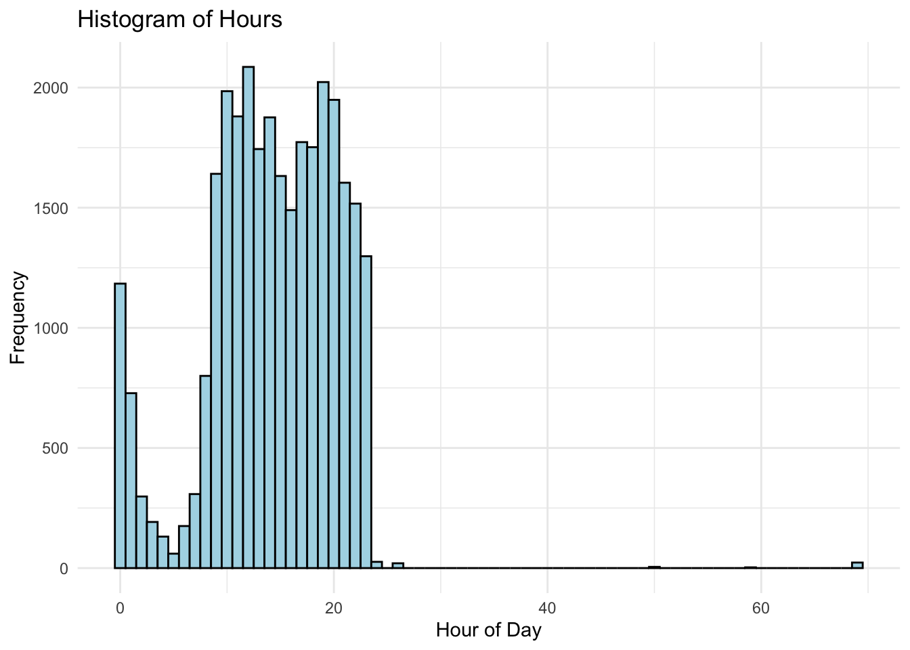
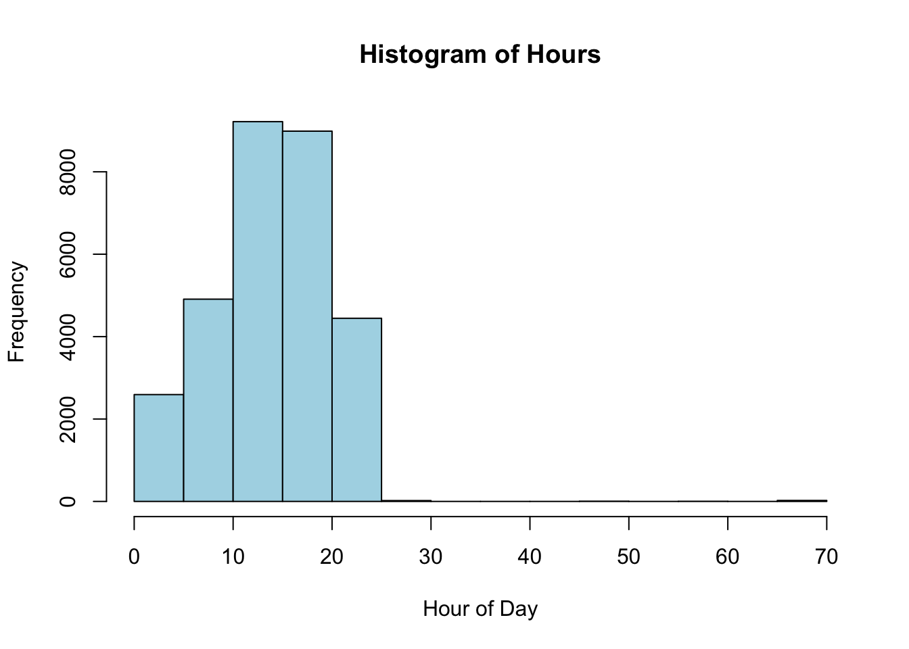
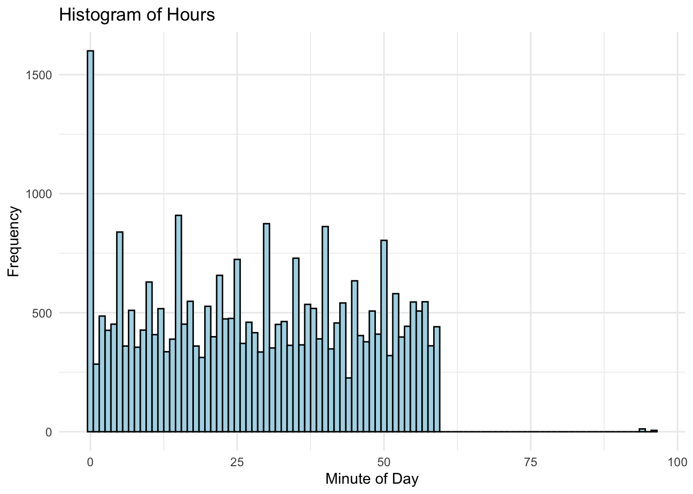
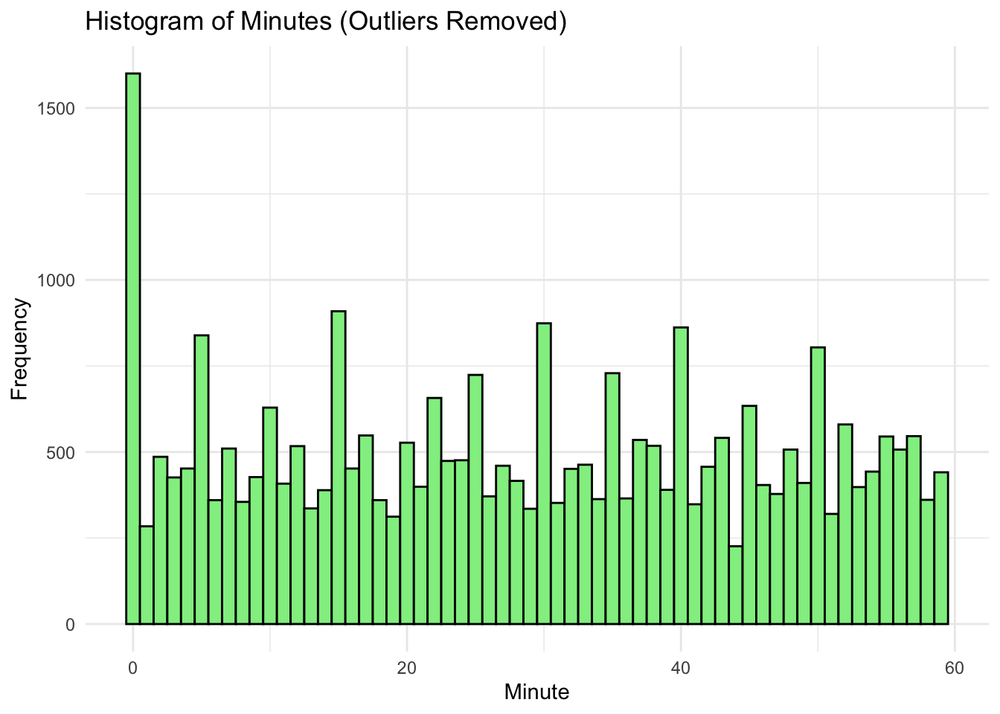
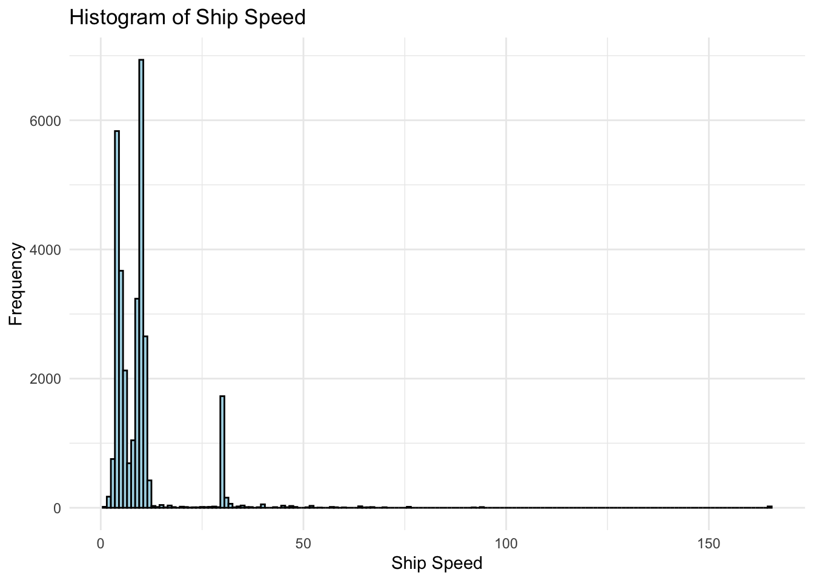
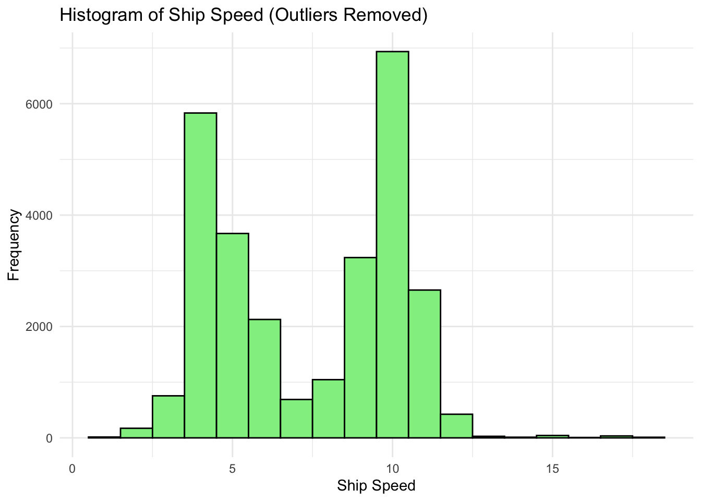
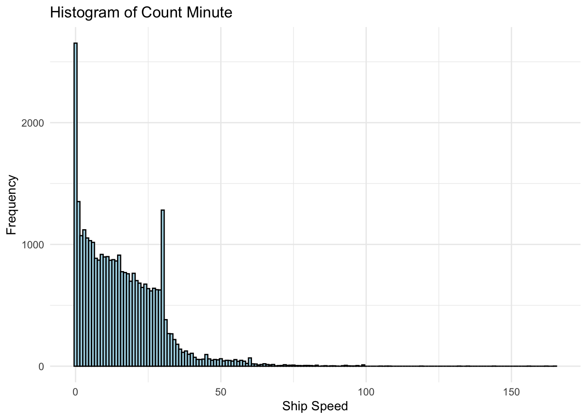
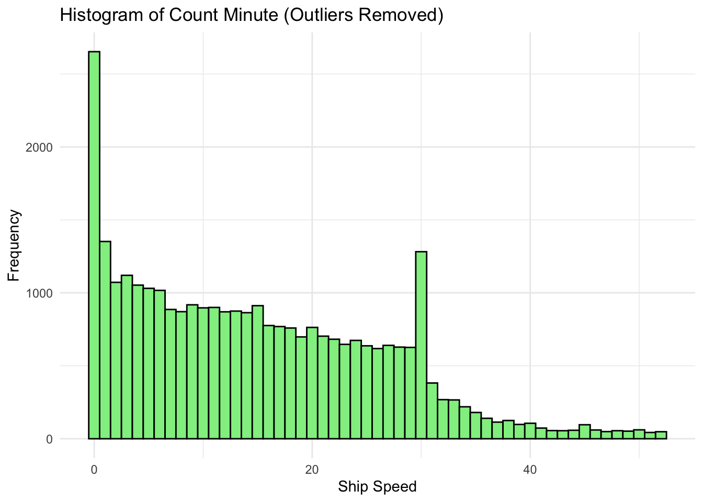

Warning: One or more parsing issues, call `problems()` on your data frame for details,
e.g.:
dat <- vroom(...)
problems(dat)
Rows: 31435 Columns: 50
── Column specification ────────────────────────────────────────────────────────
Delimiter: ","
chr (13): studyName.x, Species, Direction, Notes.x, Stern Count Start, Stern...
dbl (32): ...1, Cruise, Event Number, Count Minute, Number, Linkages, Behavi...
lgl (5): Old Longitude End (manually fixed), Lat fix, Long fix, Corrected B...
ℹ Use `spec()` to retrieve the full column specification for this data.
ℹ Specify the column types or set `show_col_types = FALSE` to quiet this message.
# station datastation_data <-read_csv(here::here("data/LTERStns.csv"))
Rows: 98 Columns: 6
── Column specification ────────────────────────────────────────────────────────
Delimiter: ","
chr (2): NorthSouthFar, Offshore
dbl (4): GridLine, GridStation, Latitude, Longitude
ℹ Use `spec()` to retrieve the full column specification for this data.
ℹ Specify the column types or set `show_col_types = FALSE` to quiet this message.
Histograms
Split the data
## separating the Date/Time column contents into separate columns# extract the Julian day, hour, and minute from the `YearDay.Hour.Minute columnunderway_obvs <- underway_obvs %>%mutate(`YearDay/Hour/Minute`=str_pad(as.character(`YearDay/Hour/Minute`), width =7, pad ="0"), # Ensure 7 charactersJulianDay =substr(`YearDay/Hour/Minute`, 1, 3), # Extract Julian Day (first 3 characters)Hour =substr(`YearDay/Hour/Minute`, 4, 5), # Extract Hour (next 2 characters)Minute =substr(`YearDay/Hour/Minute`, 6, 7) # Extract Minute (last 2 characters) )
Histogram of dates
underway_obvs$JulianDay <-as.numeric(underway_obvs$JulianDay)# plot histogram for JulianDayggplot(underway_obvs, aes(x = JulianDay)) +geom_histogram(binwidth =1, fill ="lightcoral", color ="black") +labs(title ="Histogram of Julian Days", x ="Julian Day", y ="Frequency") +theme_minimal() +scale_x_continuous(breaks =seq(0, 365, by =30), # set breaks every 30 dayslabels =function(x) paste0("Day ", x))
Warning: Removed 1227 rows containing non-finite outside the scale range
(`stat_bin()`).
# check for non-numeric values or NA valuessummary(underway_obvs$Hour)
Min. 1st Qu. Median Mean 3rd Qu. Max. NA's
0.00 11.00 15.00 14.21 19.00 69.00 1232
# plot histogram treating Hour as a continuous variableggplot(underway_obvs, aes(x = Hour)) +geom_histogram(binwidth =1, fill ="lightblue", color ="black") +labs(title ="Histogram of Hours", x ="Hour of Day", y ="Frequency") +theme_minimal()
Warning: Removed 1232 rows containing non-finite outside the scale range
(`stat_bin()`).

Histogram of Hours (without outliers)
# calculate Q1, Q3, and IQR (difference btwn Q3 and Q1)Q1 <-quantile(underway_obvs$Hour, 0.25, na.rm =TRUE)Q3 <-quantile(underway_obvs$Hour, 0.75, na.rm =TRUE)IQR <- Q3 - Q1# define the lower and upper bounds for outlierslower_bound <- Q1 -1.5* IQRupper_bound <- Q3 +1.5* IQR# filter out the outliersunderway_obvs_filtered <- underway_obvs %>%filter(Minute >= lower_bound & Minute <= upper_bound)## histogram of hoursunderway_obvs$Hour <- (underway_obvs$Hour)hist(underway_obvs$Hour, breaks =24, col ="lightblue", main ="Histogram of Hours", xlab ="Hour of Day", ylab ="Frequency")

mean((underway_obvs$Hour), na.rm =TRUE)
[1] 14.20657
Histogram of Minutes (with outliers)
underway_obvs$Minute <-as.numeric(underway_obvs$Minute)# check for non-numeric values or NA valuessummary(underway_obvs$Minute)
Min. 1st Qu. Median Mean 3rd Qu. Max. NA's
0.00 13.00 29.00 28.48 43.00 96.00 1227
# plot histogram treating Minute as a continuous variableggplot(underway_obvs, aes(x = Minute)) +geom_histogram(binwidth =1, fill ="lightblue", color ="black") +labs(title ="Histogram of Hours", x ="Minute of Day", y ="Frequency") +theme_minimal()
Warning: Removed 1227 rows containing non-finite outside the scale range
(`stat_bin()`).

Histogram of Minutes (without outliers)
# calculate Q1, Q3, and IQR (difference btwn Q3 and Q1)Q1 <-quantile(underway_obvs$Minute, 0.25, na.rm =TRUE)Q3 <-quantile(underway_obvs$Minute, 0.75, na.rm =TRUE)IQR <- Q3 - Q1# define the lower and upper bounds for outlierslower_bound <- Q1 -1.5* IQRupper_bound <- Q3 +1.5* IQR# filter out the outliersunderway_obvs_filtered <- underway_obvs %>%filter(Minute >= lower_bound & Minute <= upper_bound)# plot histogram after removing outliersggplot(underway_obvs_filtered, aes(x = Minute)) +geom_histogram(binwidth =1, fill ="lightgreen", color ="black") +labs(title ="Histogram of Minutes (Outliers Removed)", x ="Minute", y ="Frequency") +theme_minimal()

Histogram of ship speed (kts)
# check for non-numeric values or NA valuessummary(underway_obvs$`Ship Speed`)
Min. 1st Qu. Median Mean 3rd Qu. Max. NA's
0.700 4.800 9.000 9.728 10.400 165.000 1262
underway_obvs$`Ship Speed`<-as.numeric(underway_obvs$`Ship Speed`)# plot histogram treating `Ship Speed` as a continuous variableggplot(underway_obvs, aes(x =`Ship Speed`)) +geom_histogram(binwidth =1, fill ="lightblue", color ="black") +labs(title ="Histogram of Ship Speed", x ="Ship Speed", y ="Frequency") +theme_minimal()
Warning: Removed 1262 rows containing non-finite outside the scale range
(`stat_bin()`).

## histogram without outliers# calculate Q1, Q3, and IQR (difference btwn Q3 and Q1)Q1 <-quantile(underway_obvs$`Ship Speed`, 0.25, na.rm =TRUE)Q3 <-quantile(underway_obvs$`Ship Speed`, 0.75, na.rm =TRUE)IQR <- Q3 - Q1# define the lower and upper bounds for outlierslower_bound <- Q1 -1.5* IQRupper_bound <- Q3 +1.5* IQR# filter out the outliersunderway_obvs_filtered <- underway_obvs %>%filter(`Ship Speed`>= lower_bound &`Ship Speed`<= upper_bound)# plot histogram after removing outliersggplot(underway_obvs_filtered, aes(x =`Ship Speed`)) +geom_histogram(binwidth =1, fill ="lightgreen", color ="black") +labs(title ="Histogram of Ship Speed (Outliers Removed)", x ="Ship Speed", y ="Frequency") +theme_minimal()

Histogram of Count Minute (time spent surveying)
Use the largest value in the Event
# check for non-numeric values or NA valuessummary(underway_obvs$`Count Minute`)
Min. 1st Qu. Median Mean 3rd Qu. Max.
0.00 5.00 14.00 16.05 24.00 901.00
underway_obvs$`Count Minute`<-as.numeric(underway_obvs$`Count Minute`)underway_obvs <- underway_obvs %>%mutate(`Count Minute`=as.numeric(`Count Minute`)) %>%# Ensure the column is numericmutate(`Count Minute`=replace_na(`Count Minute`, 0)) %>%# Replace NAs with 0filter(`Count Minute`>=0&`Count Minute`<=200) # Exclude negative values and values > 200# exclude rows with negative valuesunderway_obvs <- underway_obvs %>%filter(`Count Minute`>=0)# check summary after processingsummary(underway_obvs$`Count Minute`)
Min. 1st Qu. Median Mean 3rd Qu. Max.
0.00 5.00 14.00 15.94 24.00 165.00
# plot histogram treating `Count Minute` as a continuous variableggplot(underway_obvs, aes(x =`Count Minute`)) +geom_histogram(binwidth =1, fill ="lightblue", color ="black") +labs(title ="Histogram of Count Minute", x ="Ship Speed", y ="Frequency") +theme_minimal()

## histogram without outliers# calculate Q1, Q3, and IQR (difference btwn Q3 and Q1)Q1 <-quantile(underway_obvs$`Count Minute`, 0.25, na.rm =TRUE)Q3 <-quantile(underway_obvs$`Count Minute`, 0.75, na.rm =TRUE)IQR <- Q3 - Q1# define the lower and upper bounds for outlierslower_bound <- Q1 -1.5* IQRupper_bound <- Q3 +1.5* IQR# filter out the outliersunderway_obvs_filtered <- underway_obvs %>%filter(`Count Minute`>= lower_bound &`Count Minute`<= upper_bound)# plot histogram after removing outliersggplot(underway_obvs_filtered, aes(x =`Count Minute`)) +geom_histogram(binwidth =1, fill ="lightgreen", color ="black") +labs(title ="Histogram of Count Minute (Outliers Removed)", x ="Ship Speed", y ="Frequency") +theme_minimal()

summary(underway_obvs$`Count Minute`)
Min. 1st Qu. Median Mean 3rd Qu. Max.
0.00 5.00 14.00 15.94 24.00 165.00
Summary stats for each histogram (without outliers)